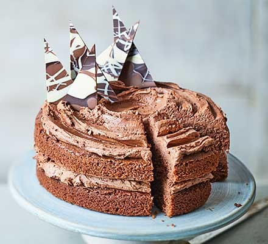

HOME
Chocolate Cake

Photo from BBC good food
Description:
This recipe creates an amazing chocolate cake with an airy, light sponge and rich buttercream filling which will satisfy anybody who eats it. This recipe is taken from BBC good food. Click on the image to find out more. Serves 12-14.
Ingredients:
For the cake:
- 200g golden caster sugar
- 200g unsalted butter (softened plus extra for the tins)
- 4 large eggs
- 200g self-raising flour
- 2 tbsp cocoa powder
- 1 tsp baking powder
- ½ tsp vanilla extract
- 2 tbsp milk
For the buttercream:
- 100g milk chocolate (chopped)
- 200g butter (softened)
- 400g icing sugar
- 5 tbsp cocoa powder
- 2 tbsp milk
For the chocolate shards (optional):
- 50g dark chocolate
- 25g milk chocolate
- 25g white chocolate
Instructions:
- Heat oven to 190C/170C fan/gas 5. Butter the base and sides of two 20cm round sandwich tins and line the bases with baking parchment.
- In a large bowl, beat together 200g golden caster sugar, 200g softened unsalted butter, 4 large eggs, 200g self-raising flour, 2 tbsp cocoa powder, 1 tsp baking powder, ½ tsp vanilla extract, 2 tbsp milk and a pinch of salt until pale.
- Divide the mixture between the prepared tins. Bake for 20 mins or until a skewer inserted into the centre of the cake comes out clean.
- Leave to cool in the tin for 10 mins, then turn out onto a wire rack to cool completely.
- For the buttercream, put 100g chopped milk chocolate in a heatproof bowl and melt in the microwave, stirring every 30 secs. Leave the melted chocolate to cool for 5 mins.
- Mash 200g softened butter and 400g icing sugar together with a fork, then switch to a wooden spoon or electric beaters, if you have them.
- Sift in 5 tbsp cocoa powder with a pinch of salt and pour in the melted chocolate and 2 tbsp milk. Mix again until smooth.
- On a cake stand or large plate, sandwich the cakes together with half of the buttercream, then spread the rest on top. Decorate with chocolate shards, if you like.
- To make chocolate shards: melt 50g dark chocolate and pour it onto a tray lined with baking parchment or foil.
- Now melt 25g milk chocolate and 25g white chocolate and drizzle them over the dark chocolate before it sets.
- Shake the tray gently to level the mixture then leave to set somewhere cool. Chop into shards.
{kind=link}